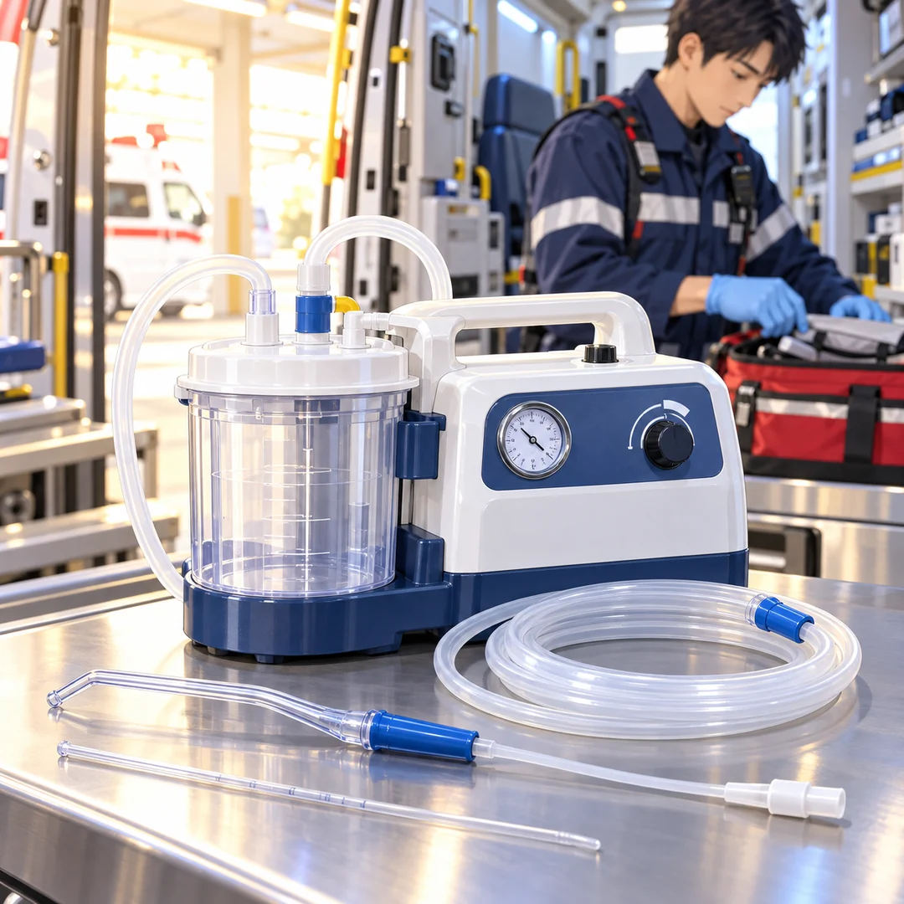

吸引器と関連資器材
読む目安：約3分

画像をタップすると拡大できます
私は、吸引器。
必要な場面で、口腔内の血液や粘液などを吸引するために使う資器材です。消防庁の応急処置基準にも、吸引器を用いて口腔内の血液や粘液等を除去する処置が示されています。いざというときに手が届き、確実に作動する。そのための準備は、出動前から始まっています。[1]
本体だけでは、仕事にならない
吸引器は、本体のほか、回収容器や吸引バッグ、フタ、チューブ、吸引カテーテルまたは吸引チップ、電源やバッテリーなどを組み合わせて使います。フィルターやオーバーフロー防止機構の有無・構造も機種によって異なります。必要な部品と組み合わせは、配備機種の取扱説明書で確認しましょう。[2]
置き場所は、すぐ手が届くところに
収納場所は、固定できること、取り出しやすいこと、電源や接続部を確認しやすいことが基本です。車内の配置を決めたら、隊員間で定位置を共有します。電源コードやチューブが他の資器材に引っ掛からないかも、実際の出し入れを通して確かめます。
作動確認は、機種の手順で
出動前の確認では、次の項目をメーカー指定の方法と所属の点検要領に照らして見ます。数値や確認方法を他機種から流用せず、取扱説明書に示された条件で実施してください。
- 電源：バッテリー残量、充電状態、電源表示や警告表示を確認。
- 作動：電源投入、自己診断機能の表示、吸引圧・作動状態を取扱説明書に沿って確認。
- 回収容器：容器やバッグの装着、フタの固定、接続部、満杯表示や保護機構を確認。
- チューブ・フィルター：折れや外れ、詰まりがないか、指定されたフィルターが装着されているかを確認。
- 配置：必要な付属品がそろい、決められた場所からすぐ取り出せるかを確認。
付属品・消耗品は「適合」と「補充」
チューブ、吸引カテーテル、吸引チップ、回収容器、フィルターなどは、機種との適合や単回使用・再使用の区別を確認します。包装の破れ、使用期限、保管数を点検し、使用後は所属の基準と製品の指示に従って交換・洗浄・消毒します。補充した人と確認した人が分かる記録方法も、チームで決めておきましょう。
私から、隊へ
置き場所、電源、接続、消耗品。準備は一つずつ。
本体の作動だけでなく、必要な付属品がそろい、すぐ使える状態かまで確認する。点検と補充の方法を共有しておけば、次の出動への準備も確かなものになります。